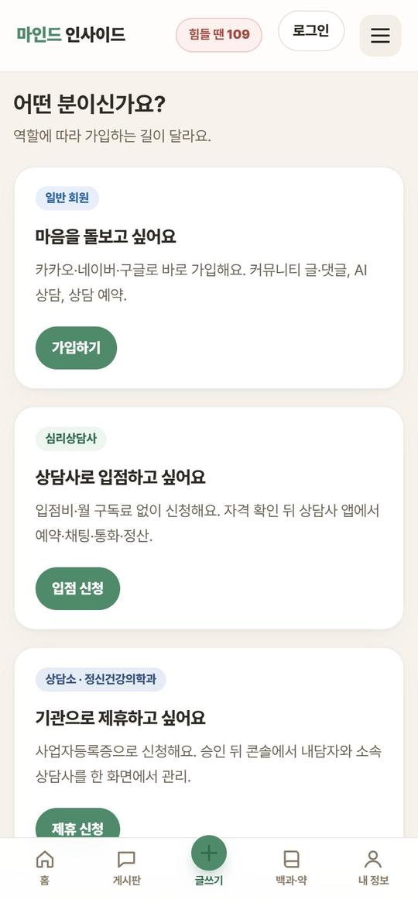
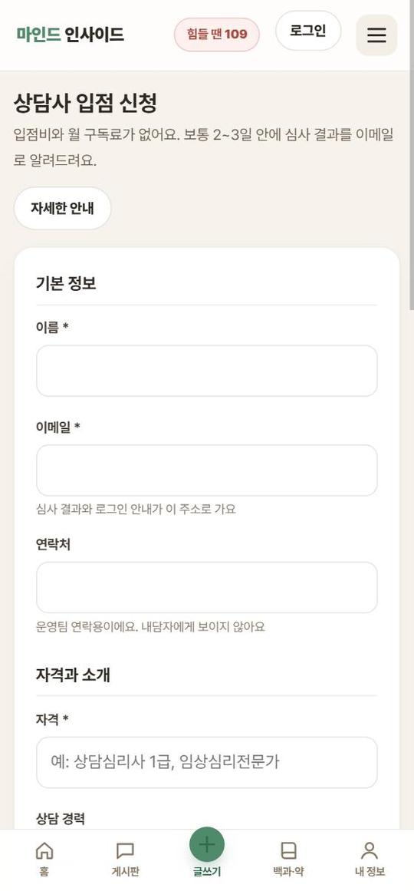
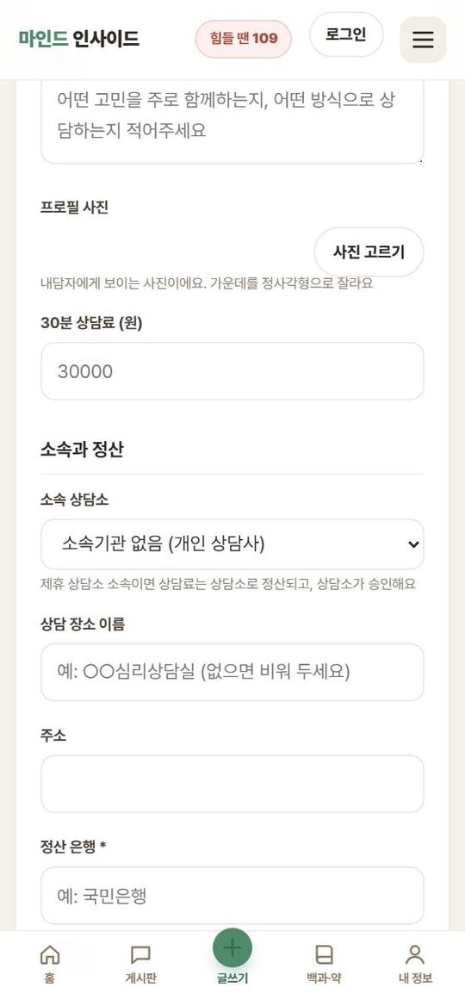
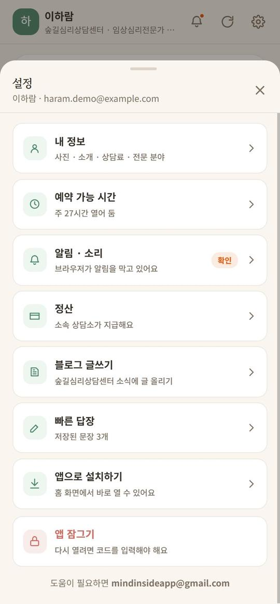
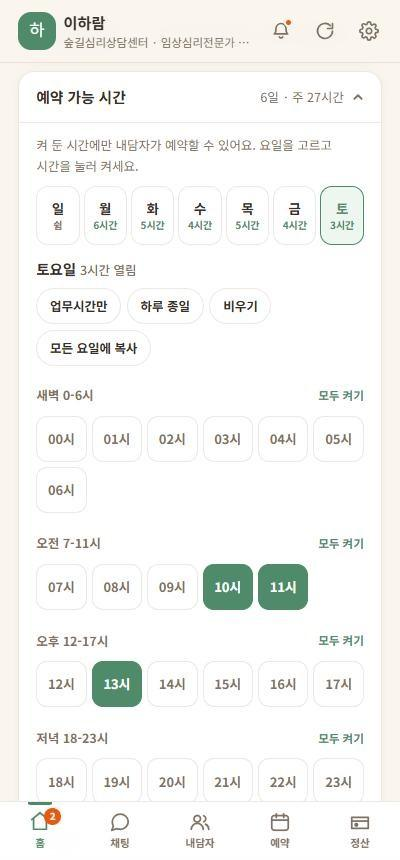
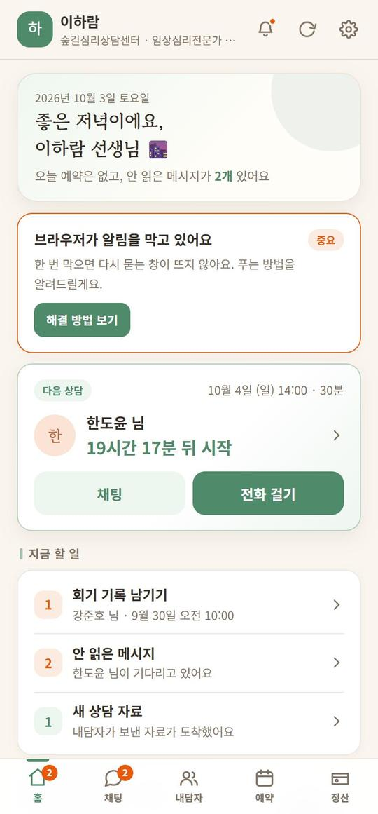
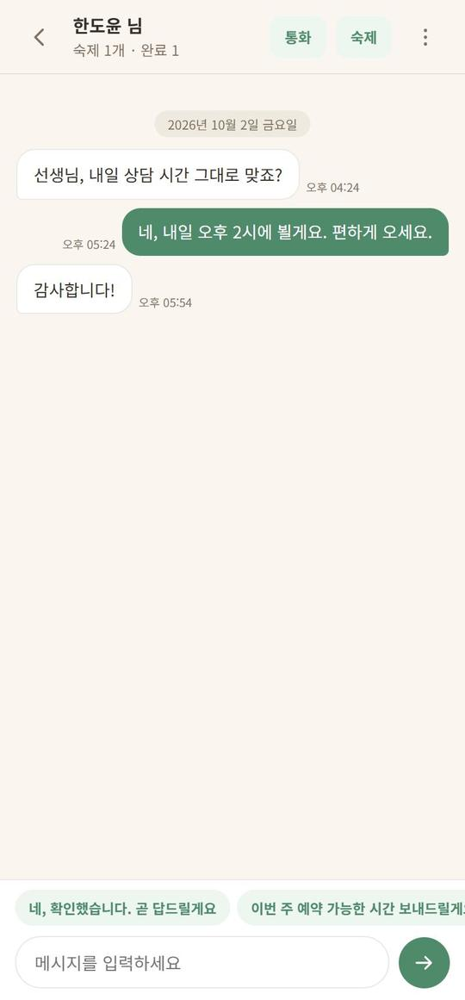
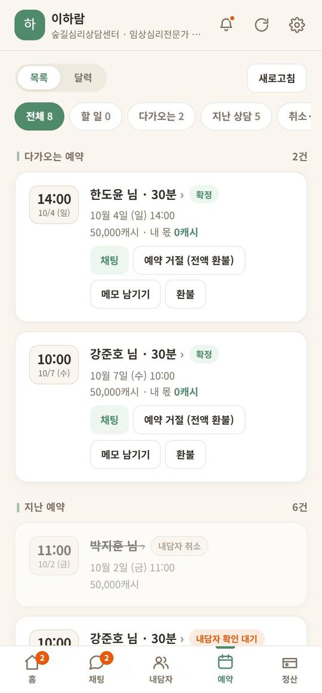
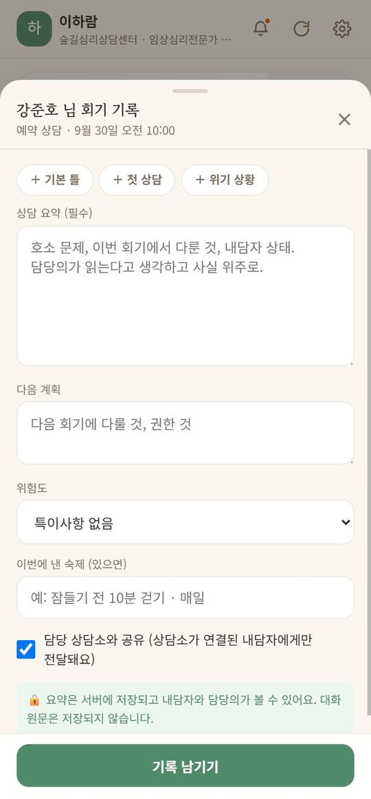
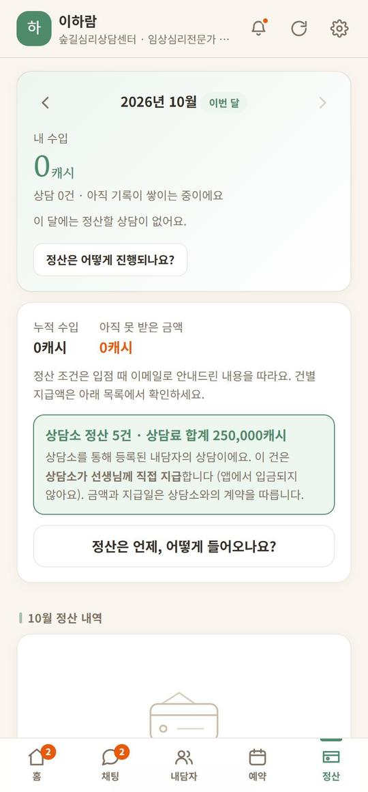

상담사로 입점해서
이렇게 일하고, 이렇게 벌어요
왜 지금 들어와야 하는지, 얼마를 어떻게 버는지 먼저 숫자로 보여 드리고, 입점 신청부터 매일 할 일까지 순서대로 정리했어요.
1왜 지금 들어와야 하나
내담자가 먼저 와 있는 곳이에요
마인드 인사이드 이용자는 매일 AI 상담사와 마음을 돌봐요. 그러다 "사람과 이야기하고 싶다"는 순간이 오면, 앱 아래 전화 심리상담 칸에서 바로 상담사를 찾아요. 광고로 내담자를 모으는 대신, 이미 마음을 털어놓을 준비가 된 사람이 선생님 프로필을 봐요.
내담자가 무엇 때문에 왔는지 알고 시작해요
이용자는 앱에서 기분을 기록하고, 생각 기록지를 쓰고, 카톡 대화 분석으로 관계를 정리해요. 상담에 오기 전에 자기 문제를 말로 정리해 본 사람이라 첫 회기가 빨라요. (상담 기록을 담당 상담소와 공유하는 것은 내담자가 연결했을 때만이에요.)
장소·시간을 내가 정해요
상담실이 없어도 돼요. 예약 가능 시간을 요일·시간 단위로 직접 켜고, 비는 시간엔 바로상담 스위치를 켜 두면 지금 이야기하고 싶은 사람과 바로 연결돼요. 저녁·주말처럼 내담자가 많은 시간에 맞추기 쉬워요.
잡무를 앱이 해요
- 예약·결제·환불 — 앱이 처리해요. 돈 이야기를 내담자와 직접 하지 않아도 돼요.
- 상담 30분 전 알림 — 상담사와 내담자 모두에게 가요.
- 회기 기록 틀 — 기본·첫 상담·위기 상황 틀을 눌러 채워요.
- 정산 계산 — 건별로 내 몫과 원천징수까지 계산해서 보여 줘요.
이름을 알릴 길이 있어요
커뮤니티 고민 Q&A에 답을 달고, 상담소 소속이면 칼럼(블로그)을 쓸 수 있어요. 커뮤니티 글은 검색에 노출돼요. 좋은 답 하나가 프로필 방문으로 이어져요.
2얼마나, 어떻게 버나
| 항목 | 내용 |
|---|---|
| 입점비 · 월 구독료 | 0원 |
| 내 몫 | 상담료 6만 원까지는 70%, 6만 원을 넘는 부분은 55% |
| 카드 수수료 | 3%는 앱 몫에서 내요 — 내 몫에서 빠지지 않아요 |
| 세금 | 개인은 3.3% 원천징수 뒤 입금, 사업자는 세금계산서 |
| 상담료 | 내가 정해요(30분 기준). 바로상담은 30초당 캐시로 정해요 |
한 건에 얼마가 남나
| 상담료 | 내 몫 | 3.3% 뗀 입금액 |
|---|---|---|
| 30분 40,000원 | 28,000원 | 27,076원 |
| 30분 50,000원 | 35,000원 | 33,845원 |
| 50분 80,000원 | 53,000원 | 51,251원 |
| 60분 100,000원 | 64,000원 | 61,888원 |
한 달이면 (30분 50,000원 기준)
| 주당 상담 | 한 달(약 4.3주) | 내 몫 |
|---|---|---|
| 주 5건 | 약 21건 | 약 735,000원 |
| 주 10건 | 약 43건 | 약 1,505,000원 |
| 주 20건 | 약 86건 | 약 3,010,000원 |
왜 많이 벌 수 있나
- 고정비가 0원이에요. 상담실 임대료·관리비·광고비가 없으니 받는 돈이 거의 그대로 남아요.
- 시간을 촘촘히 쓸 수 있어요. 이동이 없어서 상담 사이 빈 시간이 짧고, 비는 시간엔 바로상담으로 채워요.
- 지역 제한이 없어요. 전화·채팅이라 전국 내담자를 만나요.
- 상담료를 올려도 몫이 커져요. 6만 원을 넘는 부분도 55%를 받아요. 경력이 쌓이면 상담료를 올리세요.
- 잡무가 없어요. 예약 조율, 입금 확인, 노쇼 처리, 환불을 앱이 해요. 그 시간에 상담을 한 건 더 해요.
3솔직히 따져 보면
처음부터 예약이 꽉 차지는 않아요
- 새 서비스라 처음 몇 주는 예약이 적을 수 있어요. 프로필 사진·소개·전문 분야를 꼼꼼히 채우고, 예약 가능 시간을 넉넉히 열고, 바로상담을 켜 두는 상담사가 먼저 선택받아요.
- 후기가 쌓일수록 선택받기 쉬워요. 첫 내담자에게 정성을 쏟으세요.
- 회기 기록을 남기지 않으면 정산이 보류돼요. 상담이 끝나면 바로 쓰는 습관을 들이세요.
- 상담은 진단·처방을 하지 않아요. 약이 필요해 보이면 정신건강의학과 진료를 권해 주세요.
- 정산 주기 등 세부 조건은 승인 메일의 입점계약서를 따라요.
4입점 신청 — 처음부터 끝까지
- 가입 안내 열기mindinside.kr/blog/join 에서 "상담사로 입점하고 싶어요" › [입점 신청]. 커뮤니티 메뉴 더보기 › 상담사·상담소 가입으로도 가요.
- 기본 정보이름, 이메일(심사 결과와 로그인 안내가 여기로 가요), 연락처(운영팀 연락용, 내담자에게 안 보여요).
- 자격과 소개자격(예: 상담심리사 1급, 임상심리전문가), 상담 경력, 자격증 사진(필수, 심사에만 쓰고 공개 안 함), 전문 분야 3개까지, 소개 600자, 프로필 사진, 30분 상담료.
- 소속과 정산소속 상담소를 골라요. 제휴 상담소에 다니면 그 상담소를, 아니면 "소속기관 없음(개인 상담사)". 개인이면 정산 은행·계좌번호·예금주를 꼭 적어요. 소속이면 계좌 대신 상담소와 정산해요.
- 약관 동의 후 제출접수 확인 메일이 와요. 같은 기기에서는 심사 중인 신청이 끝나야 다시 낼 수 있어요.
- 심사 (보통 2~3일)개인 상담사는 운영팀이, 소속 상담사는 그 상담소 소장이 승인해요. 반려되면 사유가 메일로 와요.
- 승인 메일 받기메일 제목은 "입점 승인 · 상담사 페이지 접속 코드". 접속 코드와 [상담사 페이지 열기] 버튼, 입점계약서(워드 파일)가 들어 있어요. 계약서를 읽고 "동의합니다"라고 회신해 주세요.
- 상담사 앱 열기pro.mindinsideapp.com 에서 접속 코드를 넣고 [시작하기]. 한 번 넣으면 그 기기에서는 계속 열려요. 구글·카카오·네이버 계정을 한 번 연결해 두면 다음부터 버튼 하나로 들어와요.



5승인 뒤 첫날 할 일
홈 화면의 시작 준비 4단계를 끝내면 내담자 목록에 제대로 보여요.
- 프로필 채우기설정 › 내 정보 — 사진, 소개, 자격, 1회 시간(30·40분), 예약 상담료, 바로상담 요율, 전문 분야(6개까지).
- 예약 가능 시간 열기설정 › 예약 가능 시간 — 요일을 고르고 시간을 눌러 켜요. [업무시간만] [하루 종일] [모든 요일에 복사]로 빠르게. 쉬는 날도 추가해요.
- 알림 켜기설정 › 알림·소리 — 새 예약·메시지·전화를 놓치지 않게. 브라우저가 막고 있으면 [해결 방법 보기]를 따라 하세요.
- 정산 계좌 등록개인 상담사만. 설정 › 정산 계좌. 계좌가 없으면 정산이 보류돼요.
- 앱으로 설치설정 › 앱으로 설치하기 — 홈 화면에서 바로 열려 알림도 잘 와요.


6상담사 앱 화면별 안내
아래 다섯 칸 — 홈 채팅 내담자 예약 정산 — 과 위쪽 종(알림)·새로고침·톱니(설정)로 이루어져 있어요.
홈
다음 상담까지 남은 시간과 [채팅]·[전화 걸기], 지금 할 일(상담 완료 처리, 회기 기록, 안 읽은 메시지, 담당의 피드백, 새 상담 자료), 바로상담 스위치, 오늘 일정, 이번 주 수입이 보여요.
채팅
내담자와 대화하고, 위쪽 [통화]·[숙제]로 바로 전화하거나 숙제를 내요. ⋮ 메뉴에서 내담자 기록 보기·메모·회기 기록 남기기·빠른 답장 관리. 빠른 답장 칩은 12개까지 저장돼요. 연락처로 보이는 글은 자동으로 가려져요(내담자 보호와 정산 분쟁 방지).
예약
목록·달력 보기, 할 일·다가오는·지난 상담·취소 필터. 상담 전에는 [예약 거절(전액 환불)], 상담 시각이 지나면 [상담 완료]·[미진행 처리]가 나와요. 환불·미진행은 사유를 꼭 적고, 사유는 내담자에게 전달돼요.
회기 기록
틀(기본·첫 상담·위기 상황)을 눌러 채우고, 상담 요약(필수), 다음 계획, 위험도(특이사항 없음 / 주의 관찰 / 긴급 — 소장 확인 필요), 이번에 낸 숙제를 적어요. "담당 상담소와 공유"는 기본으로 켜져 있어요. 쓰다 만 내용은 자동 보관돼요.
정산
이달 내 수입, 지급 완료·정산 대기·기록 없어 보류, 누적 수입과 아직 못 받은 금액, 3.3% 뗀 예상 입금액, 월별 내역.





7상담 한 건의 흐름
- 예약이 들어와요푸시 알림이 와요. 예약 탭에 "확정"으로 보여요. 사정이 생기면 상담 전에 [예약 거절(전액 환불)].
- 30분 전 알림상담사와 내담자 모두에게 "상담 N분 전" 알림이 가요.
- 상담하기채팅으로 하거나, [전화 걸기]로 통화해요. 통화는 연결 뒤 [상담 시작]을 눌러야 시간이 재지고, 그 전 통화는 무료예요.
- [상담 완료] 누르기상담 시각이 지나면 버튼이 나와요. 누르면 회기 기록 창이 바로 열려요. 되돌릴 수 없으니 상담이 끝난 뒤에 누르세요.
- 회기 기록 남기기요약을 5자 이상 적고 [기록 남기기]. 위기라면 위험도를 "긴급"으로 — 연결된 상담소 소장에게 바로 메일이 가요.
- 확정 → 정산내담자가 확인하거나 72시간이 지나면 확정돼요. 확정되고 회기 기록이 있는 상담만 정산 대상이 되고, 운영팀이 등록 계좌로 보내요.
내담자가 상담에 안 나왔다면
[미진행 처리]를 누르고 사유를 적어요. 상담 24시간 안에 내담자가 취소하면 상담료의 50%가 선생님 몫으로 정산돼요.8매일·매주 할 일
매일 (5분)
- 홈 "지금 할 일"을 0으로상담 완료 처리 → 회기 기록 → 안 읽은 메시지 → 담당의 피드백 → 새 상담 자료 순서로.
- 오늘 일정 확인다음 상담 카드와 오늘 예약. 30분 전에 자리를 잡아요.
- 바로상담 스위치상담할 수 있으면 켜고, 자리를 비우면 꺼요. 켜 두고 전화를 못 받으면 내담자가 실망해요.
- 메시지는 그날 안에예약 전 문의에 빨리 답할수록 예약으로 이어져요.
- 알림 경고가 없는지홈에 "알림을 막고 있어요" 카드가 보이면 바로 해결하세요.
매주
- 다음 주 예약 가능 시간 열기일정이 바뀌면 시간표를 고치고 쉬는 날을 추가해요.
- 정산 탭 "기록 없어 보류" 0건보류가 있으면 [기록 남기러 가기]로 바로 채워요.
- 후기에 답글홈 › 관리 › 내 리뷰에서 답글을 달 수 있어요.
- 고민 Q&A 한두 개 답하기커뮤니티(mindinside.kr)에서 내 전문 분야 고민에 답을 달아요.
9상담소 소속 상담사라면
- 입점 신청 때 소속 상담소를 고르면 그 상담소 소장이 승인해요. 이미 입점했다면 설정 › 내 정보 › 소속 기관에서 바꾸고 소장 승인을 기다려요(승인 전에는 개인 상담사처럼 앱이 정산해요).
- 소속 상담은 상담료가 상담소로 정산되고, 선생님 몫은 상담소가 계약대로 지급해요. 앱에서 직접 입금되지 않아요.
- 회기 기록은 담당 상담소와 공유돼요. 소장이 피드백을 남기면 홈 "담당의 피드백"에 떠요.
- 상담소 블로그에 칼럼을 쓸 수 있어요(설정 › 블로그 글쓰기). 커뮤니티에 선생님 이름으로 공개돼요.
10자주 묻는 것
접속 코드를 잃어버렸어요
mindinsideapp@gmail.com 으로 연락하면 운영팀이 다시 보내 드려요. 간편 로그인을 연결해 두면 코드 없이 들어와요.
알림이 안 와요
설정 › 알림·소리에서 테스트를 눌러 보세요. 아이폰은 홈 화면에 설치한 앱에서만 알림이 와요.
통화 중 표시가 안 풀려요
홈의 바로상담 칸에서 [회선 수동 해제]를 누르세요.
내담자가 연락처를 달라고 해요
앱 밖 연락은 내담자 보호와 정산을 위해 금지예요. 채팅에서 연락처는 자동으로 가려지고, 반복되면 운영팀이 확인해요.
위기 내담자를 만났어요
안전부터 확인하고 109·119를 안내하세요. 회기 기록 위험도를 "긴급"으로 남기면 연결된 상담소에 바로 알려져요.
세금은 어떻게 되나요
개인은 3.3%를 떼고 입금하고, 운영팀이 신고해요. 사업자는 세금계산서를 발행해요. 다음 해 5월 종합소득세 신고는 각자 해요.